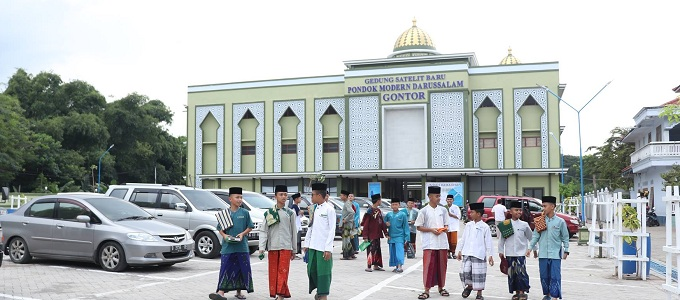

Pesantren di Pekalongan, Jawa Tengah
Tentang Pesantren di Pekalongan
Pekalongan, Jawa Tengah, dikenal memiliki banyak pesantren yang berdedikasi dalam mendidik generasi muda dalam bidang keagamaan, akhlak, dan ilmu pengetahuan umum. Para santri mendapatkan pendidikan agama Islam yang mendalam, serta pendidikan formal untuk menyiapkan mereka menjadi insan yang berguna bagi bangsa dan agama.

Beberapa Pesantren Ternama di Pekalongan
-
Pondok Pesantren Salafiyah Al-Manshur - Dikenal dengan pendidikan Salafiyah dan pengajaran Al-Qur'an yang intensif, memberikan dasar yang kuat dalam pemahaman agama dan tafsir Al-Qur'an.

-
Pondok Pesantren Syafi'i Akrom - Menggabungkan pendidikan modern dengan dasar-dasar Islam yang kuat, menyediakan kurikulum yang mengintegrasikan ilmu pengetahuan umum dan agama untuk menghasilkan santri yang berkompeten di berbagai bidang.

-
Pondok Pesantren Ribatul Muta'allimin - Fokus pada pendidikan keislaman dan pengembangan akhlak santri, membentuk karakter dan pemahaman yang mendalam tentang ajaran Islam melalui pengajaran kitab kuning dan pelatihan keterampilan hidup.

Tujuan Pendidikan Pesantren
Pesantren di Pekalongan bertujuan untuk membentuk generasi yang taat beragama, berakhlak mulia, serta mampu menghadapi tantangan zaman. Dengan pendekatan pendidikan yang berbasis agama dan akhlak, pesantren berperan penting dalam pembangunan karakter generasi muda.